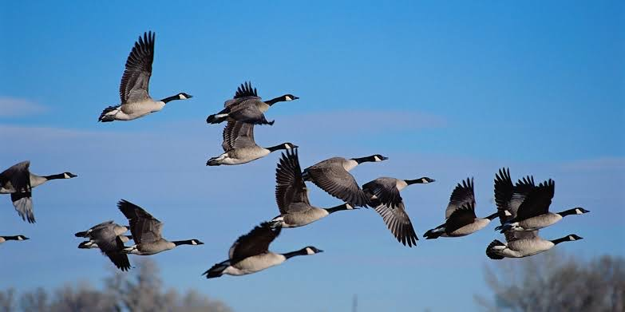
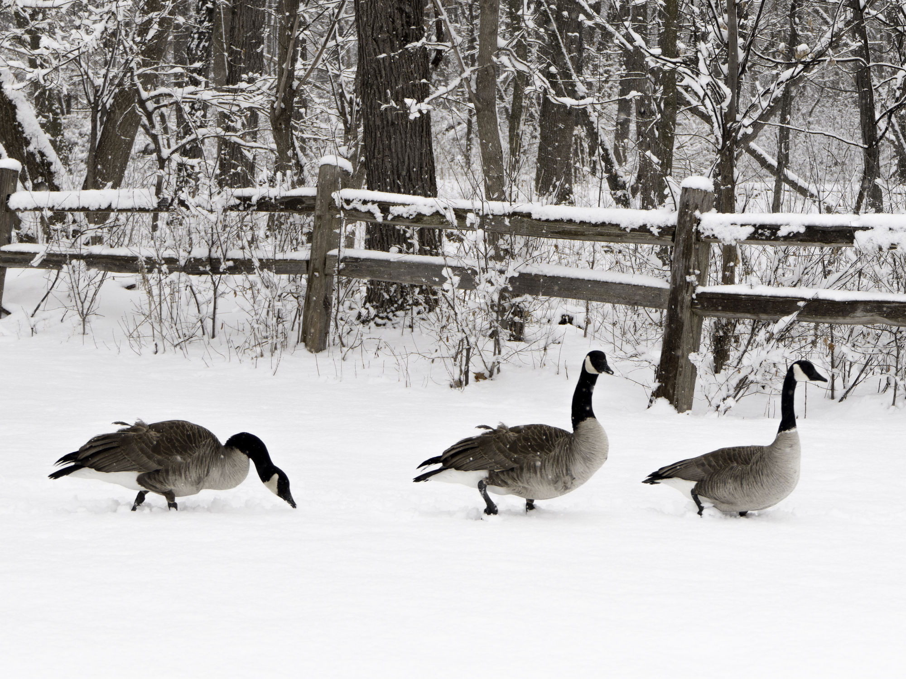
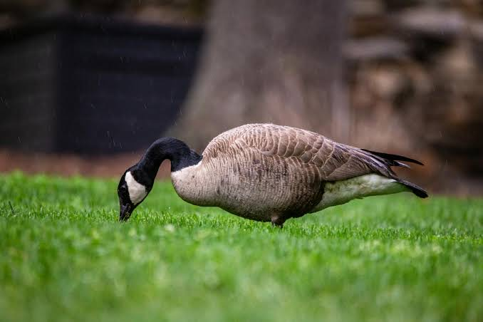

-

Migratory Patterns
Geese are renowned for their long-distance migrations, which are among the most impressive in the avian world. These migrations are typically seasonal, with geese traveling between their breeding grounds in the north and their wintering grounds in the south. The Canada goose, for example, migrates from the northern regions of North America to the southern United States and even Mexico during the winter months. The migration routes of geese are often long and arduous, covering thousands of miles. These routes, known as flyways, are usually consistent and well-established.
-

Social Behavior
Geese are highly social birds with strong family bonds. They are monogamous, often forming lifelong pair bonds with their mates. During the breeding season, which typically occurs in the spring and early summer, geese nest in secluded areas near water. Both parents are involved in rearing the young, with the female incubating the eggs and the male guarding the nest
-

Ecological Impact
Geese play a significant role in their ecosystems. As grazers, they help control vegetation growth and contribute to the cycling of nutrients. Their migratory behavior also facilitates the spread of plant seeds across vast distances, aiding in plant dispersion. Additionally, geese are prey for various predators, including foxes, eagles, and humans, making them an integral part of the food web.